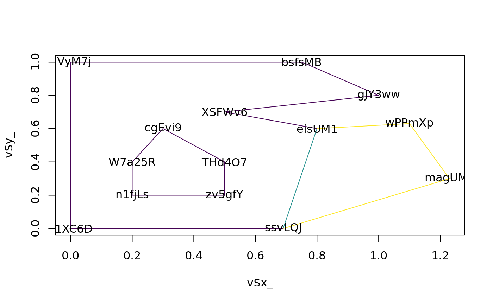

silicate: the fabric of hierarchical structures
Michael D. Sumner
2020-03-25
Source:vignettes/silicate_topology_01.Rmd
silicate_topology_01.Rmdsilicate
The silicate package provides a flexible basis for working with hierarchical data structures. This includes a clean separation of topology and geometry, allows naming of component entities, and supports intermediateforms. Silicate is a response to a fragmented landscape where many workarounds and re-implementations of similar patterns are often repeated.
Silicate is composed of normal-form models and worker verbs for extracting underlying entities. By normal-form, we mean the tidy, 3NF, de-duplicated, removal of redundancy sense.
The entities that we identify correspond to the names of the worker verbs. Whether a given model has all or any of these entities explicitly depends on the circumstances, but implicitly these are usually always present and depend only on interpretation.
-
sc_object- highest level properties, the “features” -
sc_coord- all instances of coordinates, labelled by vertex if the source model includes them -
sc_vertex- only unique coordinates (in some geometric space) -
sc_path- individual paths, sequential traces -
sc_edge- unique binary relations, unordered segments -
sc_segment- all instances of edges -
sc_arc- unique topological paths, arcs either meet two other arcs at a node, or include no nodes -
sc_node- unique nodes
Finally there is an important extra verb, the unjoin - a function to un join a table, the opposite of the database join which is used as a key step when building these models, used to remove duplication at various levels. It’s the primary mechanism for defining and building-in topology, which is (precisely) the relationships between entities in a model.
MODELS
Our capitalized model forms are all built from workflows that use these verbs. Here we illustrate with a very simple simple features model minimal_mesh, two polygons that share a single edge.
library(silicate)##
## Attaching package: 'silicate'## The following object is masked from 'package:stats':
##
## filterplot(matrix(attr(minimal_mesh$geom, "bbox"), 2, byrow = TRUE), type = "n", xlab = "", ylab = "")
rbind_na <- function(x) head(do.call(rbind, unlist(lapply(x, function(a) rbind(a, NA)), recursive = F)), -1)
cols <- sc_colours(nrow(minimal_mesh))
junk <- lapply(seq_along(minimal_mesh$geom), function(y) polypath(rbind_na(minimal_mesh$geom[[y]]), col = cols[y] ))
SC
This is the universal model, the one model that can be used to represent anything at all. The key entity in SC is the edge, a single binary relationship identifying a line segment joining two vertices. Note how each edge and each vertex has a unique label. Since each primitive has exactly the same structure this model presents a number of optimizations, and all structures can be expressed in these terms. We can even abandon any record of sequential paths in these models because they can be re-derived by tracing through the labels at a later time.
## [1] "object" "object_link_edge" "edge" "vertex"
## [5] "meta"## # A tibble: 15 x 4
## .vx0 .vx1 path_ edge_
## <chr> <chr> <int> <chr>
## 1 zh1yAx yA8enm 1 eDKc1w
## 2 yA8enm jovXFE 1 Xyuszm
## 3 jovXFE sGTzVq 1 PaZK9C
## 4 5NEDVc sGTzVq 1 AeLUdL
## 5 5NEDVc ziY0rn 1 fbUGEz
## 6 DPccXS ziY0rn 1 8wyUME
## 7 zh1yAx DPccXS 1 d7eAME
## 8 ggzL5l nAfiSD 2 OmhqDE
## 9 nAfiSD hB97f0 2 C6dNmh
## 10 jQXmoV hB97f0 2 xCXUSU
## 11 L6cP6r jQXmoV 2 uKV2cf
## 12 ggzL5l L6cP6r 2 5pBm6h
## 13 ziY0rn nckb97 3 U2GLoD
## 14 nckb97 Gtr2pc 3 8WjFul
## 15 DPccXS Gtr2pc 3 b4jUNfprint(x)## class : SC
## type : Primitive
## vertices : 14 (2-space)
## primitives : 15 (1-space)
## crs : NA
PATH
At the highest level silicate provides a normalized form of a complicated structure containing paths. This data structure contains three paths, each of which is a sequentially joined set of coordinates.
The key aspect here is that each component entity is formally named, with a unique ID that we persist for subsequent usage. This persistence is required as it records relationships between existing entitites implicitly rather than baking data into structure that are both explicit and also discard a lot of information about relationships.
Even though the path scheme requires that two vertices are visited separately by two polygon rings, we don’t expand out the vertices but simply record a reference to it in the path.
## [1] "object" "path" "path_link_vertex" "vertex"
## [5] "meta"At a basic level, the tables in this PATH are essentially the same as the kinds of structures we normally use, but we need to de-normalize them to see this exactly.
## Joining, by = "object_"## Joining, by = "path_"## Joining, by = "vertex_"## # A tibble: 19 x 10
## a object_ ncol type subobject path_ ncoords_ vertex_ x_ y_
## <int> <chr> <int> <chr> <int> <chr> <int> <chr> <dbl> <dbl>
## 1 1 D2a27I 2 MULTIPOLYGON 1 1xuf… 8 Y8ESi3 0 0
## 2 1 D2a27I 2 MULTIPOLYGON 1 1xuf… 8 glAEr5 0 1
## 3 1 D2a27I 2 MULTIPOLYGON 1 1xuf… 8 krnmcD 0.75 1
## 4 1 D2a27I 2 MULTIPOLYGON 1 1xuf… 8 ufZEW4 1 0.8
## 5 1 D2a27I 2 MULTIPOLYGON 1 1xuf… 8 iFRDAE 0.5 0.7
## 6 1 D2a27I 2 MULTIPOLYGON 1 1xuf… 8 TM8wbx 0.8 0.6
## 7 1 D2a27I 2 MULTIPOLYGON 1 1xuf… 8 yqLkff 0.69 0
## 8 1 D2a27I 2 MULTIPOLYGON 1 1xuf… 8 Y8ESi3 0 0
## 9 1 D2a27I 2 MULTIPOLYGON 1 pMG9… 6 M1zPbP 0.2 0.2
## 10 1 D2a27I 2 MULTIPOLYGON 1 pMG9… 6 oL8oPy 0.5 0.2
## 11 1 D2a27I 2 MULTIPOLYGON 1 pMG9… 6 0RDAjA 0.5 0.4
## 12 1 D2a27I 2 MULTIPOLYGON 1 pMG9… 6 Qv9QAD 0.3 0.6
## 13 1 D2a27I 2 MULTIPOLYGON 1 pMG9… 6 qmMgKp 0.2 0.4
## 14 1 D2a27I 2 MULTIPOLYGON 1 pMG9… 6 M1zPbP 0.2 0.2
## 15 2 GZMYmd 2 MULTIPOLYGON 1 RZwo… 5 yqLkff 0.69 0
## 16 2 GZMYmd 2 MULTIPOLYGON 1 RZwo… 5 TM8wbx 0.8 0.6
## 17 2 GZMYmd 2 MULTIPOLYGON 1 RZwo… 5 OvO3g8 1.1 0.63
## 18 2 GZMYmd 2 MULTIPOLYGON 1 RZwo… 5 ipUN1K 1.23 0.3
## 19 2 GZMYmd 2 MULTIPOLYGON 1 RZwo… 5 yqLkff 0.69 0Paths are easily re-expressed as a set of edges, treating each pair of coordinates as a new kind of entity. Some edges are shared, in that two objects might have a particular edge in their own path. If the shared neighbours are two polygons, then it’s likely that each polygon encounters that edge in a different direction, but this is not a stable pattern so it’s best to not assume it to be the case. It’s important here because we need to differentiate between an instance of an edge, which is a particular line segment that is part of one particular polygon. If that polygon segment is a shared edge with a neighbour polygon, then we distinguish the instances as a particular segment of a unique edge. This allows us the opportunity to treat the edge as completely abstract, and also to decide or record what it’s orientation is, which records which vertex is the first one, and which is the second. Not all applications need to care about this distinction, though.
In this way we have an analogy for edges and segments compared to vertices and coordinates, and I think this terminology makes sense!
ARC
There’s only one more entity we need to describe an alternative view of this polygon data, the actual component paths that describe these structures topologically. These are paths that occur between any two nodes, or that have no nodes at all. This will occur for any isolated “island”, or for any hole within a polygon. These arcs are exactly analogous to a LINESTRING, but are used within a context where the nodes are important information about the topology.
Nodes are any coordinate where three or more edges meet each other, so they are inherently about relationships between neighbouring shapes. This is exactly the same model as was used in the olden days, called arc-node topology, a one-dimensional topology that pre-dates the more modern use of closed planar paths to describe polygons.
library(dplyr)
arc <- ARC(minimal_mesh)
nodes <- sc_node(arc)
plot(arc)
inner_join(nodes, arc$vertex) %>% dplyr::select(x_, y_) %>% points(pch = "N")## Joining, by = "vertex_"
We haven’t yet done any coordinate precision checking, so there will be mis-identified arcs where coordinates are intended to be but are not exactly the same. (spdep glosses over this in a way we can’t control)
Example from wrld_simpl …
TRI
Triangulations. Here we strictly want constrained triangulations, where there is no divergence from the planar coverage of input shape and its triangulated decomposition. This is not easy to do, and there are two main methods. One is high-quality mostly-Delaunay triangulations where the Delaunay condition is relaxed in order to always align to input boundaries. Holes in a near-Delaunay triangulation are either removed by flood-fill from a seed-vertex, or by post-filtering the triangles whose centroid does not intersect the input boundaries. The second method is ear-clippping, a relatively inexpensive algorithm that produces low-quality triangle meshes.
Currently silicate can only provide the second form, the ear-clipping method provided by decido.

Performance is pretty good for this method of triangulation, despite also being constrained to the input shapes.
#system.time(sf::st_triangulate(inlandwaters))
# user system elapsed
# 4.699 0.125 4.823
#system.time(sfdct::ct_triangulate(inlandwaters))
# user system elapsed
# 15.476 0.225 15.460
system.time(tri <- TRI(inlandwaters))## user system elapsed
## 5.173 0.012 5.194The triangles are low-quality (but triangles are very easy to subdivide).
plot(tri)

The CRAN package sfdct will use the first method (package RTriangle wraps the Triangle library) for simple features.